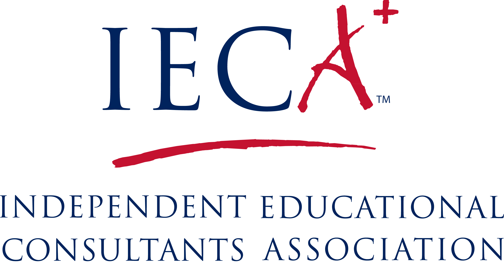
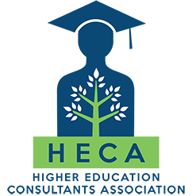

Lily Hu
大学升学教育顾问和化学辅导
我早年毕业于中国著名的北京师范大学，从此与教育结下了不解之缘。后来我到美国深造，并从事制药研究工作。
在陪伴我的两个孩子成长过程中，我也一直热衷于学校和社区的义务服务。
我在 Palo Alto 学区但任过 AAR（Advanced Authentic Research) 义务辅导员，也在 College Track（一个非盈利机构）担任大学升学顾问和化学课辅导。因为我非常喜欢与青少年沟通与交流，
我决定从事全职教育顾问工作，辅导导学生化学功课，以及指导学生完成大学申请过程.
我以优异成绩获得了加州大学洛杉矶分校（UCLA）的大学升学咨询证书（Certificate in College Admission Counseling with
Distinction)，还成为了 IECA（美国独立教育顾问协会）的会员和 HECA（美国高等教育顾问协会）的会员。
我的辅导方法
我致力于提供个性化和关怀的方法。我每年与少数学生一起工作，以确保我给予每个学生充分的关注。 我指导学生的高中规划，大学搜索和申请过程。 我理解每个学生有自己独特的学习风格，技能，才能和需求，因此我会根据学生的情况为他们量身定制教育计划。
服务范围及内容
- 评估学生的具体情况，并提供有关高中课程选择的建议以及高中计划
- 根据学生的兴趣爱好，提供课外活动的建议
- 提供暑假活动建议及申请
- 推荐个性化的大学申请名单
- 指导学生不同平台的大学申请流程（Common App，UC，Coalition 等）
- 为学生提供大学访问建议
- 指导学生以及练习招生面试
- 帮助学生集思广益，起草和修订文书
- 在整个升学过程中为学生提供支持，鼓励学生保持积极的态度
所属职业机构



我遵循 NACAC 制定的 “良好实践原则声明”，并遵守协会设定的核心价值观：专业，协作，信任，教育，公平，和社会责任。
化学功课辅导
我本科和硕士主修化学，有多年研究工作经验。
为学生提供各种化学功课辅导：
- 普通化学（Regular Chemistry)
- 高级班化学 (Honor Chemistry)
- AP 化学 (AP Chemistry)
- 有机化学 (Organic Chemistry)
参加的义务服务活动
- College Track 的大学升学辅导员（一个由 Laurene Powell Jobs 创立的非盈利组织，为低收入家庭的学生提供升学和功课辅导)
- Palo Alto 联合学区的 AAR（Advanced Authentic Research）义务辅导，专注于化学和生命科学研究
- PiE（Palo Alto 教育合作伙伴）Gunn 高中代表
学生和家长的话语
"我现在将去普渡大学，如果没有 Lily 的帮助，我是不可能取得这样的成绩的。当我在开始完全迷失方向时，她帮助指导我弄清楚我想做什么，想要什么样的学校，以及怎样寻找最佳选择。我不觉得她把我推向大名校只是因为它们在纸上听起来不错，而是她全力帮我找到最适合我的学校。每当我需要帮助或有问题时，她都会通过电子邮件快速回复并提供大量详细信息."
- Izabela B. (学生，被普渡大学录取)
"Lily 对 Gunn 高中课程非常了解。当我们提起一所考虑的大学时，Lily可以立即详细谈论它的不同方面。我的女儿非常信任并尊重她的建议。她对自己所做的事情充满热情!"
- Maggie (学生家长)
"亲爱的 Lily，非常感谢你今年帮助我！我非常感谢您的耐心以及您的奉献精神!"
- Nora (学生)
"亲爱的 Lily，感谢您在我的大学申请中给我的所有帮助，感谢您的辛勤工作和奉献精神！感谢您的耐心，并花时间帮助我完成我的文书，QuestBridge 和奖学金申请!"
- Anthony R. (学生， 被USC录取)
"亲爱的Lily, 我激动地告诉你，我的化学单科考试 (SAT Subject Chemistry) 取得了满分！非常感谢你！如果没有你的帮助，我是不可能取得这么好的成绩的!"
- Linda L. (学生)
联系方法
- 电子邮件: lilyhuconsulting@gmail.com
- 发短信: 1-510-545-9482
- 微信号: LilyHu3083
- 或者扫描微信二维码: